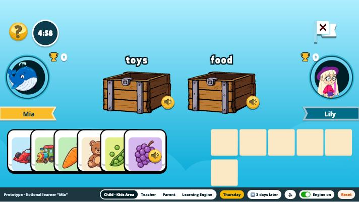
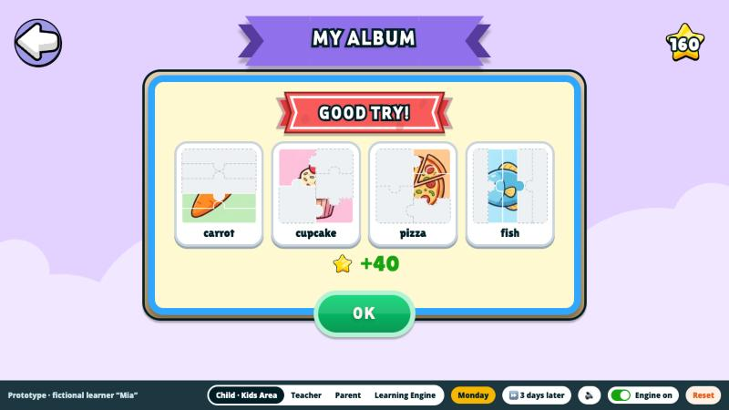
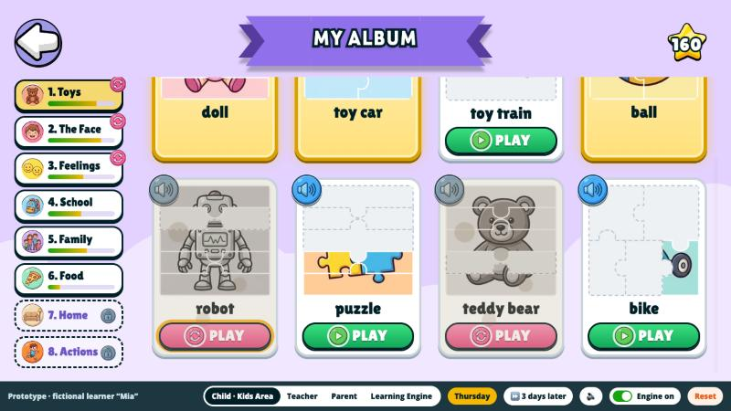
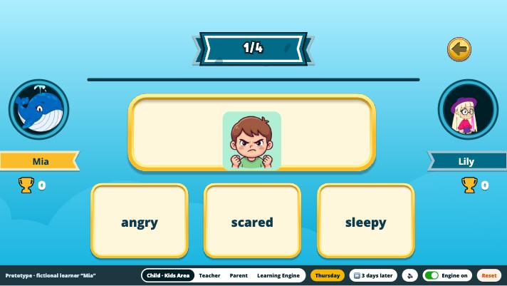
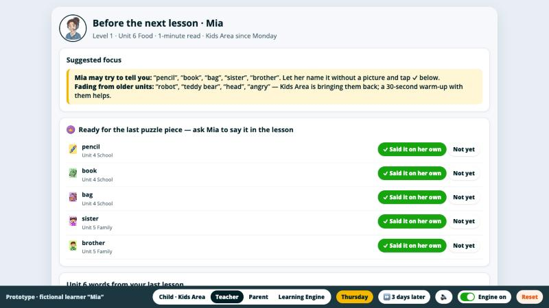
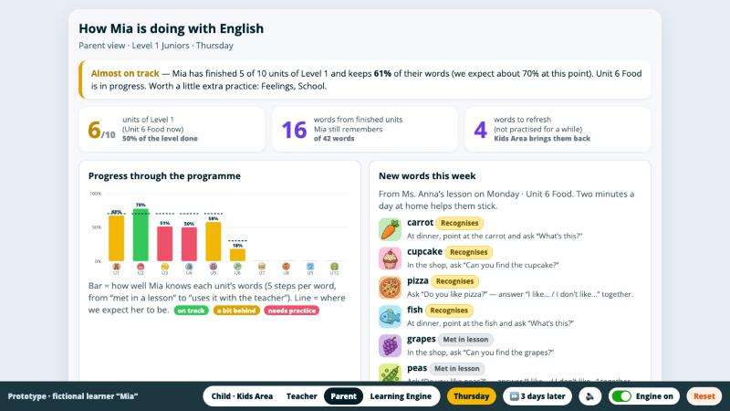

A copy of Kids Area with the new feature. Laptop or tablet, landscape, sound on. Guide with screenshots: slide 8.
Contents
Part 1 Strategy · slides 2–5 Part 2 Kids Area initiative · slides 6–7 Prototype guide · slide 8 Part 3 Content · 9 · Part 4 · 10 · Sources · 11
Mia (8) and her teacher Ms. Anna are fictional. Novakid facts come from the parent and child accounts; numbers marked “assumption” are mine.
Part 1 · Strategy · 1.1 The cost of disconnection
One week of Mia: each product starts from zero
Level
One of 7 stages, Pre-K to Level 6. Mia is in Level 1
Unit
A topic and its language. Level 1 has 13; hers is Unit 6 Food
Lesson
Unit 6 has four lessons, then a Unit Review
Competency
A skill: “speak about food using like / don’t like”
The competency model already exists (parent account, Achievements), but it only says “unlocked”: no mastery, no evidence, no source. The Learning Engine adds those three.
Mon · 1-1 lesson
Says “I no like peas”, mixes up peas and grapes. Nothing recorded.
1. Errors stay in the lesson
Tue · Kids Area
Daily quest “play any game”: Memo Mix with family, bike, then 16 min of Streams.
2. Practice ignores her unit
Wed · Homework
Listen and pick: she recognises the words, but never says them.
3. Trains recognition only
Thu · Group class
Topic: weekends. The teacher doesn’t know her unit; Mia stays silent.
4. No shared profile
Fri · Pandy AI
Chats about Minecraft, half in her native language.
5. Doesn’t know the week’s goal
Sat · Parent
68 competencies “unlocked”, one listed four times.
6. The payer sees no progress
Mon · 1-1 lesson
Can’t tell if she practised: 5–7 min of re-checking.
7. Practice never reaches the teacher
Hurts learning most: 1 and 7. The lesson-to-practice loop is cut.
Hurts retention most: 6, then 7. Parents and teachers see nothing.
Source: Novakid child and parent accounts; Mia’s week is a composite. · 2
Part 1 · Strategy · 1.2 The minimum viable learner profile
Ten signals on one five-step ladder per competency
A signal is a child’s answer to a task tagged with a competency ID from Novakid’s existing competency model (Achievements). Every attempt, hint and response time is logged. Time spent and attendance are context, not evidence. A step needs its own kind of evidence: recognition games never lift a word past step 2.
1 · Met in lesson
Lesson record: unit and competencies taught
1-1 · system data. Context for every signal, not evidence
2 · Recognises
#1 Audio → picture, first try
Kids Area · medium: 1 in 4 is a guess
#7 In-lesson interactives
1-1 · medium: the teacher may prompt
3 · Says it
#4 Builds a phrase or spells a word
Kids Area · medium: options can be brute-forced
#5 Says the structure in reply
AI Tutor · noisy: child speech recognition, LLM grading
4 · Remembers
#8 Correct 3+ days after the last contact
Kids Area, 1-1 · reliable: knowledge, not short-term memory
5 · Uses it
#6 Teacher: can’t / with help / alone
1-1 · noisy (human), but the most valid speech signal
#9 Uses it in a new context
Group, AI Tutor · noisy and rare, strongest evidence
Across all steps
#2 Attempts and hints before the right answer
Kids Area · reliable if every attempt is logged
#3 Response time on known items
Kids Area · noisy: trend only
#10 Unit Review, competency checks
1-1 · reliable, once per chapter
One score per answer: correct × attempt factor (1 → 0.8 → 0.6…) × 0.6 if a hint was used, corrected for guessing. Average per competency → difficulty zone; 0.75–0.95 is the right challenge.
Cards go beyond words. A card can also teach a structure (“I don’t like…”) or a sound (l / r): the engine tracks competencies, not words.
We start with the simplest collectible. We build and test an album cheaply, then can grow it into a richer world, e.g. a Word Garden where lessons plant seeds.
Part 2 · Kids Area initiative · metrics, MVP, engine
More days, short sessions, and words that stay
Metric
Baseline
Expected change (A/B, segment)
Active days per week
1.39
Up: +15–20% in 4 weeks (assumption)
Time spent
—
Same or shorter sessions (3–6 min) on more days; Streams share down
Repeat use
—
More returns for the 3-day check; share of lesson cards reaching piece 4
W1 retention, levels 0–1
target >20%
Up, towards the target
AI Tutor retention
~30%
Up in Q2, once Pandy practises album words
Learning
—
North Star up; next-lesson accuracy higher on practised competencies
Parent guardrail: useful-time share
≥ 70% of Kids Area minutes go to current-unit tasks at the right difficulty. If active days rise while this falls, kids came for the album, not the learning.
MVP
Units 5–6 of Level 1; cards from the last lesson; pieces 1–4 via three existing games; the 3-day check. Teacher’s piece and parent view: Q2.
Biggest assumption
“Next piece in 3 days” brings a 7–9-year-old back, rather than disappointing them.
Playtest 6–8 kids, 1–2 days
Painted door in daily quest, 1 week
A/B, 4 weeks + long-term holdout
Stop if day-3 return isn’t better after 2 weeks.
Reads from the engine: the last lesson’s unit and competencies (exists today), each word’s step and due date; the teacher’s rating from Q2.
Sends back: every attempt, hint and time with its competency ID, 3-day checks, Pandy speech from Q2. This feeds the teacher card and the parent page.
If the engine isn’t ready: cards follow the child’s programme position; steps come from Kids Area’s own logs. Only the teacher card and last piece wait.
Baselines from the task. Expected changes are hypotheses to test, not forecasts. · 7
1 After the lesson: Ms. Anna added 6 Food words. Press OPEN.
2 A page per unit. Gold = all 5 pieces. Tap a card to hear it.

3 PLAY: the engine picks the game, here Box Battle.

4 New pieces; stars only for progress.

5 “3 days later”: old cards got dusty and ask for a refresh.

6 Quiz Corner checks memory: first try, no hint.

7 Teacher: which words to ask for the last piece.

8 Parent: progress against the programme, words to practise.
Games and art are Kids Area’s own, rebuilt for the prototype; word pictures are generated. Fits 7+: voice-first, almost no reading, 3–5 minute sessions. · 8
Part 3 · Content production and testing
One unit spec feeds four products; content is judged by recall
3.1 One unit, many products: Level 1, Unit 6 Food
Shared: the unit spec
Competency IDs
11 food words; I like / I don’t like / Do you like…?; sounds l, r
Typical errors (“I no like”) → distractors, hints
Evidence rule per step
Parent “can do” line
One picture and audio library
Safety: no diets, weight, “bad food”
1-1: four lessons teach the words; a warm-up re-checks them; the teacher rates “I don’t like…” in one tap
Group: kids ask each other “Do you like…?” using the food words; one card pack per level band
Kids Area: words and pictures become album cards; “I no like” becomes a wrong option in games
AI Tutor: “Picnic with Pandy” asks about 3 foods, listens for I like / don’t like, avoids diets
3.3 How we know content works
Axis
Works when
Engagement
Completion, replays ≥ Kids Area average; no drop-off cliff
Small segments: randomise within age (7–9, 10–12) × level (0, 1); variant A on some competencies, B on others in the same child. Primary: 3-day recall; 1–2 weeks.
3.2 The pipeline
1 Unit spec
A methodologist, once per unit
2 AI drafts
Items, distractors, Pandy script, group cards
3 Pictures, audio
Library first; AI art in house style; voice
4 Auto checks
Level words, 1 right answer, grammar, assets
5 Review by risk
10% of approved templates; 100% of new ones
6 Safety QA
Classifier + human; child-like attacks on Pandy
7 Soft launch
5% of kids; difficulty from real answers
Bottleneck: step 5, four methodologists. More throughput, same quality: approve templates, not items · catch mechanical errors automatically · let soft-launch data flag weak items.
Unit 6 Food, its lessons and competencies are taken from the real Level 1 programme. · 9
Part 4 · Judgment scenarios · each under 150 words
Weighing competing goals
A. Engagement without learning
I keep the habit, because it is the hard part, but I treat active days as a condition for learning, not the goal.
Week 1, diagnose. How much of the lift comes from children replaying level 0 games they have already passed? What is the difficulty score of those games (above 0.95 means they test nothing)? Can a noisy teacher rating move in six weeks at all?
Week 2, a fast A/B. Stars only for new progress, so replaying mastered content earns nothing, and daily quests point to the current unit. Primary metric: 3-day recall accuracy; guardrail: active days.
To leadership: “We built the habit, which is the hard part. Right now it points at stars, but parents pay for progress, and farming will cost their trust. In two weeks we change the reward rules. Success: active days drop no more than 10% while the learning metric rises.”
B. Foundation versus visible wins
It is a false choice if the engine is built in thin vertical slices rather than layers.
This quarter’s visible win uses data that already exists: the last lesson’s unit feeds My Album in Kids Area and a “can do” line for parents. The renewal campaign gets a real feature, and it is also engine v0: competency IDs, an attempt log, the first loop. The two engineers on the foundation are protected from extra feature requests.
To the commercial team: dated, concrete material for the campaign (“your child can now say…”, practice from their own lessons), and an honest list of what we won’t promise this quarter, such as full personalisation.
To engineering: the win is built on the future engine’s schema, not thrown away, and every stage ships something users see, so there are no silent quarters.
Both groups see one plan and a monthly demo.
C. Data at the cost of teacher time
Principle: ask teachers only for what we can’t get any other way.
Automatic signals first: in-lesson interactive results and a recall warm-up at the start of each lesson already cover recognition and memory.
One tap, not a form: the teacher rates 1–3 lesson competencies, pre-filled from the lesson plan, as can’t / with help / alone, on the end-of-lesson screen they already use. Under 30 seconds.
Give time back: a pre-lesson card on each student saves 5–7 minutes of re-checking, so teachers gain more than they give.
A pilot with about 50 volunteers, run with Teacher Operations: we measure input time, completion and agreement between raters on reference recordings. It becomes mandatory only after the benefit is proven.
Later: speech recognition on lesson recordings suggests the rating, and the teacher only confirms it.